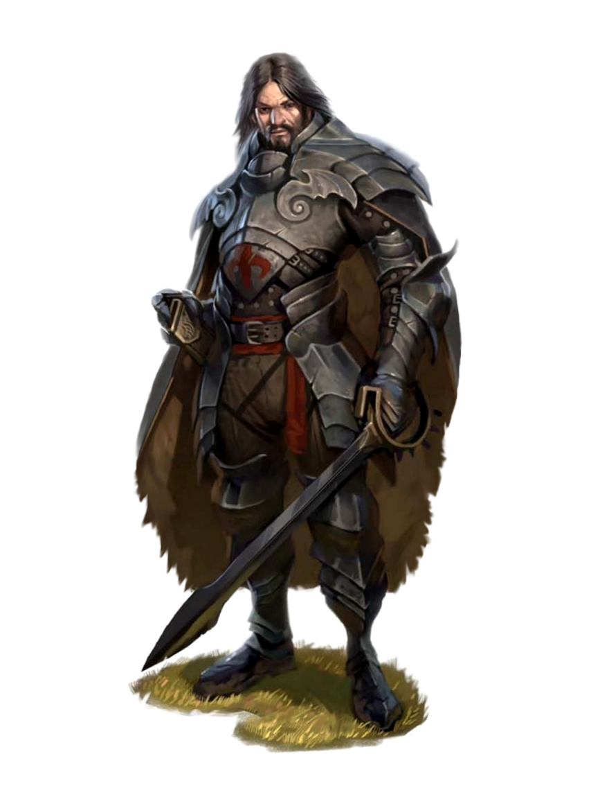

Razas
"Women and men; soldiers and outlaws; fools and corpses. All will find their way to us now that the road is clear."
― Darkest Dungeon

Humano
Los humanos es la raza anthropomorfa mas comun en todo el mundo de fantasia, dotadas con una versatilidad imprecionante y una tenacidad envidiable esta raza es capas de hacer todo lo que se proponga tanto en el nombre del bien o en las fuerzas del mal.
Cualidades
puntaje de atributos incrementado: los humanos suelen tener +1 en todos sus atributos.
Edad: los humanos suelen llegar a su madures completa a los 20 años y viven menos de un siglo en la mayoria de los casos.
Alineamiento: los humanos no tienden a un alineamiento en especifico, puedes encontrar tanto lo mejor como lo peor entre ellos.
Tamaño: los humanos varian bastante en altura y fisico, suelen llegar a medir 5 pies de alto
hasta incluso 6. sin importar a ello se les considera una raza de tamaño mediano.
Velocidad: su velocidad basica en tierra son 30 pies de distancia.ee
Lenguajes: los humanos hablan, leen y escriben Comun y un lenguaje extra de su eleccion.
los humanos de forma tipica aprenden el lenguaje de las personas con las que tienen que lidiar
dia a dia, incluyendo dialectos mas oscuros. de vez en cuando endulzan su habla con palabras
tomadas de otras lenguas, insultos orcos, expreciones musicales elficas, frases militares enanas,
entre otras.